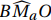
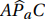

2.5 A Circunferência de Nove Pontos
A Circunferência de Nove Pontos apresentada nesta seção é notável por conter pontos distintos como os pontos médios dos lados do triângulo, os pés das alturas e por outros três, conforme a definição 2.25:
Os pontos médios entre o ortocentro e cada vértice do triângulo, são chamados de pontos de Euler de um triângulo.
Os três pontos de Euler determinam o triângulo de Euler de um dado triângulo.
Em um triângulo, os pontos médios dos lados, os pés das alturas e os pontos de Euler estão em uma mesma circunferência.
A partir da Figura 2.33, e de alterações convenientes, pretende-se mostrar que os pontos ilustrados estão em uma mesma circunferência, exceto o ortocentro H.
Verifique que os segmentos MaMc e OaOc são paralelos, pois seus extremos são pontos médios em dois triângulos: ΔABC e ΔAHC que compartilham o lado AC. Além disso, são base média desses triângulos e $$M_{a}M_{c} = O_{a}O_{c} = \frac{1}{2} \times AC.$$ Analogamente, $$M_{c}O_{a} = M_{a}O_{c} = \frac{1}{2} \times BH.$$ Portanto, esses pontos definem o paralelogramo McMaOcOa.
Além disso, McOa e OaOc são perpendiculares entre si, pois são paralelos, respectivamente, à altura BPb e ao lado AC. Desta forma, o paralelogramo McMaOcOa é um retângulo, portanto suas diagonais são congruentes.
Por outro lado, e na mesma linha de raciocínio, os quadriláteros: OaObMaMb e MbMcObOc também são retângulos. Se K é o ponto médio em uma das diagonais de qualquer desses retângulos, é também dos demais, pois se tomarmos esses retângulos dois a dois, percebemos uma diagonal em comum.
Deste modo pode-se afirmar que os pontos Oa, Ob, Oc, Ma, Mb e Mc estão em uma mesma circunferência de centro em K, pois as diagonais de um retângulo são congruentes. Resta verificar que os pés das alturas Pa, Pb e Pc também estão.
No triângulo acima, H é o Ortocentro, O o circuncentro e K' é o ponto médio de HO, logo os ângulos  e  são retos e os segmentos OMa e HPa são paralelos. Suponha uma reta paralela a HPa que passe em K': como K' é ponto médio de HO, pelo Teorema Fundamental da Proporcionalidade, tal reta divide igualmente MaPa e é mediatriz deste segmento, assim K' equidista de Ma e Pa.
Analogamente se aplica aos pontos Mb e Pb, e Mc e Pc. Portanto os pontos médios Ma, Mb e Mc e os pés das alturas Pa, Pb e Pc estão em uma mesma circunferência assim como os pontos de Euler, e K' = K, que é o centro da circunferência de nove pontos.